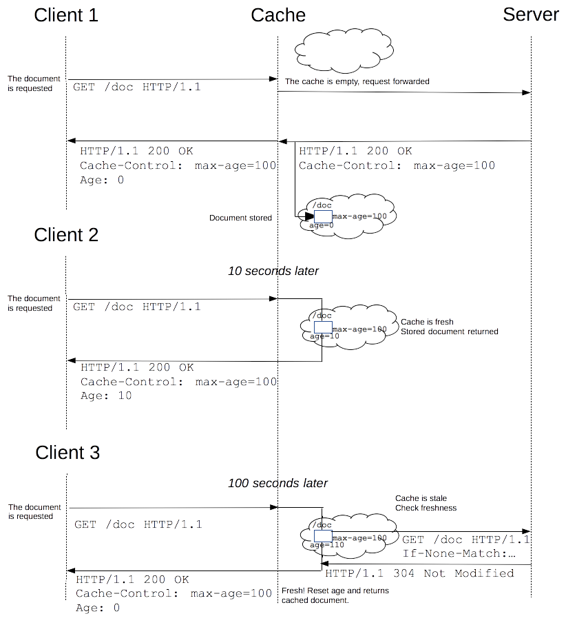

注：文中的客户端指浏览器（浏览器缓存）与缓存服务器，实际上缓存服务器是代理服务器的一种，在本文中将缓存服务器归结至客户端，服务端则指源服务器。
什么是缓存Cache? 为什么人们要使用它?
一个使用缓存Cache的站点会监听客户端向服务端发出的请求，并保存服务端的回应——比如HTML页面、图片等文件。接着，如果再次使用相同URL发送请求，他能够使用之前已经保存下来的反馈文件，而不是再次向服务端发出请求。
有两个主要的理由让人们使用缓存:
- 减少延迟 — 因为所发出的网页请求是指向更接近客户端的缓存而不再是服务端，因此请求所花费时间更短，这让网站看上去反应更快。
- 降低网络负荷 — 因为缓存文件可以重复使用,节省了不少的带宽（单位时间内能传输的数据量）。这也给用户省了不少流量。
缓存Caches种类
缓存分为浏览器缓存（浏览器前进与后退功能的实现）和代理缓存。
浏览器缓存 Caches
浏览器缓存机制，其实主要就是HTTP协议定义的缓存机制。
浏览器缓存机制主要有两种策略：Expires策略与Cache-Control策略。这两种策略可以用来判断缓存的资源是否已经过期。
Expires策略（忽略）
Expires是Web服务器响应消息中的头字段，在响应HTTP请求时告诉浏览器在过期时间前可以直接从浏览器缓存或服务器缓存取数据，而无需再次请求。
Expires响应头包含日期/时间，即在此日期之后，响应过期。
示例：Expires: Wed, 21 Oct 2015 07:28:00 GMT
通过比较Expires和请求头中Date属性的值，来判断缓存是否失效。
不过Expires是HTTP 1.0的东西，现在默认浏览器均默认使用HTTP 1.1，所以它的作用基本忽略。
Cache-Control策略（重点关注）
Cache-Control与Expires的作用一致，都是指明当前资源的有效期，控制浏览器是否直接从客户端取数据或是重新发请求到服务端。只不过Cache-Control的选择更多，设置更细致，如果同时设置的话，其优先级高于Expires。
首先我们来看一下HTTP协议头Cache-Control中容易混淆的几个部分：
缓存请求（Request header）指令：
- no-cache：告诉客户端，不管副本是否过期，使用资源副本前，一定要到服务端进行副本有效性校验（ETag）。
- no-store：告诉客户端不应该缓存这个请求的Response。
- max-age：指定资源的缓存时长，覆盖响应头中首次指定的缓存时长。使用请求头中的缓存时长与已缓存时长进行比较从而判断资源是否过期。
- min-fresh：在指定时间内，客户端缓存不会过期。
- max-stale：接收已过期响应，在max-stale过期时间内仍然有效。
- only-if-cached：只请求客户端已缓存的数据，若客户端无缓存数据则返回504。
缓存响应（Response header）指令：
- public：该响应可以被任何中间人（比如中间代理、CDN等）缓存。
- private：该响应只能应用于浏览器私有缓存中。
- no-cache：提示客户端在重新验证这个缓存之前不应该使用。
- no-store：指示客户端应该删除这个缓存。
- max-age：资源在客户端上缓存的最长时间（相对时间）。
下面我们对上述所牵扯的一些字段再做一些补充。关于有效性校验（ETag）在下文会进行说明。
Cache-Control: no-cache
客户端发送请求中如果包含no cache指令，表示浏览器不会接受缓存内容。客户端的请求必须转发给服务端。
服务端的响应中如果包含no cache指令，表示客户端不能对资源进行缓存。服务端也将不再对客户端请求中提出的资源有效性进行确认。
Cache-Control: max-age=604800
客户端发送请求中包含max-age指令时，如果判定资源的缓存时间比指定时间的数值小，那么客户端可以接受缓存的资源。另外，如果指定max-age=0，那么客户端必须将请求转发给服务端。
服务端的响应中包含max-age指令时，客户端在指定的时间内将不对资源有效性再做确认，而max-age数值代表资源保存为缓存的最长时间。
重要的一点就是max-age代表的是相对时长而不是绝对时长，如下图（图片截选自：HTTP 缓存）：

上图也展示了如何使用max-age进行资源是否过期的判断。
Cache-Control: min-fresh=60
要求服务端返回还未过指定时间的缓存资源。比如，当指定min-fresh=60后，过了60s的资源都无法作为响应返回。
Cache-Control: max-stale=3600
可指示缓存资源，即使过期也照常接受。如果指令未指定任何参数，那么无论经过多久，客户端都会接受响应。如果指令中指定了具体数值，那么即使资源过期，但只要处于max-stale指定时间内，仍然可以被客户端接受。
Cache-Control: only-if-cached
使用only-if-cached指令表示客户端仅在缓存了目标资源的情况下才会返回响应。该指令要求客户端不重新加载响应，也不会再次确认资源有效性。若发生请求客户端的缓存无响应，则返回状态码504（网关超时）。
Last-Modified与If-Modified-Since
Last-Modified：标示这个响应资源的最后修改时间。服务端在响应请求时，告诉客户端资源的最后修改时间。
If-Modified-Since：使用If-Modified-Since头将Last-Modified所标识的时间发送至服务端。服务端收到请求后与被请求资源的最后修改时间进行比对。若最后修改时间较新，说明资源又被改动过，则响应整片资源内容，返回200；若最后修改时间较旧，说明资源没有修改，则响应HTTP 304 (无需包体，节省浏览，缓存的页面仍然有效)，告知浏览器继续使用所保存的缓存。
ETag与If-None-Match
ETag：服务端响应请求时，告诉客户端当前资源在服务端的唯一标识（生成规则由服务端决定）。Apache中ETag的值默认是对文件的索引节（INode），大小（Size）和最后修改时间（MTime）进行Hash后得到的。
If-None-Match：当资源过期时（使用Cache-Control标识的max-age），发现资源具有ETag声明，则再次向服务端请求时带上头If-None-Match（存储了ETag的值）。服务端收到请求后发现有头If-None-Match 则与被请求资源的相应校验串进行比对，决定返回200或304。
既生Last-Modified何生ETag？
你可能会觉得使用Last-Modified已经足以让浏览器知道本地缓存的副本是否足够新，为什么还需要ETag（实体标识）呢？HTTP1.1中ETag的出现主要是为了解决几个Last-Modified比较难解决的问题：
- Last-Modified标注的最后修改只能精确到秒级。
- 如果某些文件会被定期生成，然而内容并没有任何变化，此时Last-Modified却改变了，导致文件没法使用缓存而一直向服务端请求最新的资源。
- 服务端没有准确获取文件修改时间。
代理缓存
代理缓存就是我们所说的缓存服务器，它使用相同的原理，但却有大得多的规模，代理可以用相同的方法为几百甚至几千的使用者服务。
代理缓存是共享缓存的一种，不是只有一个人正在使用它们，而是同时有大量的用户，因此它们非常好的节约了带宽和网页延迟。
关于代理缓存的内容，可以参考Web代理与CDN缓存，更详细的内容我就不在这里细说了。
网站缓存的工作原理
所有的缓存都有一整套工作机制，其中一些规则来自于HTTP协议,另一些则来自管理员。
通常来说，它们有一些共有的规则：
- header响应头部分可以设置是否进行缓存。
- 如果请求是经过HTTP认证或是SSL安全链接, 缓存无法工作。
- 如果符合以下条件，缓存机制的启用是通过页面的刷新引起：
- 时间没有超过已设置的缓存页面过期时间。
- 缓存是最近请求时保存的，或是缓存修改的时间也是新的。
- 当资源过期时（使用Cache-Control标识的max-age），发现资源具有Last-Modified声明，则再次向服务端请求时带上头If-Modified-Since，表示客户端请求时间。服务端收到请求后发现有头If-Modified-Since则与被请求资源的最后修改时间进行比对。若最后修改时间较新，说明资源又被改动过，则响应整片资源内容；若最后修改时间较旧，说明资源无新修改，则响应HTTP 304，告知客户端继续使用所保存的cache。
- 特定情况——比如与服务端断开连接缓存会直接作为请求的响应。
如何设置网站的缓存 Caches
HTML Meta标签Tags VS HTTP报头Headers
我们可以在HTML文件中的
部分写入tag标签来描述该文件的属性。meta tags常常可以用来标签文件是否启用缓存和设置缓存的过期时间。Meta tags很容易使用，但是却很没效率。那是因为它们只对浏览器缓存有用，而对缓存服务器无用（代理从来不会读取HTML文件）。总结
- 熟悉Cache-Control策略；
- 熟悉HTTP协议头Cache-Control中常用字段的意义；
- 熟悉Last-Modified和ETag的区别（这两个也是进行缓存验证的方法）；
- 掌握常用的HTTP状态码含义。
参考阅读
缓存Cache详解—付潭
HTTP 通用首部字段—Unitless
HTTP 缓存—mozilla MDN web docs